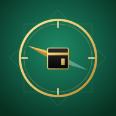

myQiblatSolat 4 rakaat sahaja dipendekkan kepada 2 rakaat: Zohor, Asar, Isyak. Subuh (2) dan Maghrib (3) tidak boleh diqasar.
Syarat: berniat qasar ketika takbiratul ihram; tidak berimamkan orang yang solat penuh (jika berimamkan orang yang bermukim, wajib solat penuh); masih musafir sehingga selesai solat.
Contoh niat (dalam hati): "Sahaja aku solat fardu Zohor dua rakaat qasar kerana Allah Taala."
Pasangan yang boleh dijamak: Zohor + Asar dan Maghrib + Isyak. Subuh tidak boleh dijamak.
Jamak Taqdim (dalam waktu pertama, cth. Asar ditarik ke waktu Zohor): (1) mesti tertib, solat pertama dahulu; (2) niat jamak dalam solat pertama, sebelum salam; (3) berturut-turut tanpa diselangi perbuatan lain yang lama; (4) masih musafir hingga mula solat kedua.
Jamak Takhir (dalam waktu kedua, cth. Zohor dilewatkan ke waktu Asar): (1) berniat untuk takhir ketika masih dalam waktu solat pertama; (2) masih musafir hingga selesai kedua-dua solat. Tertib tidak disyaratkan.
Contoh niat: "Sahaja aku solat fardu Zohor dua rakaat qasar dihimpunkan bersama Asar secara jamak taqdim kerana Allah Taala."
Fatwa Kedah menetapkan had laut 43.74 batu nautika (81 km). Bagi perjalanan feri/bot, jarak diukur ikut laluan air terdekat antara jeti/pantai; app mengira jarak garis lurus (great-circle), iaitu jarak terdekat yang mungkin di atas air. Jika perjalanan bercampur darat + feri, pilih mod Darat supaya laluan feri dimasukkan dalam kiraan.
Solat di atas kapal/feri: jika mampu, berdiri dan menghadap qiblat (guna tab Qiblat); jika tidak mampu, solat mengikut kemampuan dan menghadap arah yang boleh.